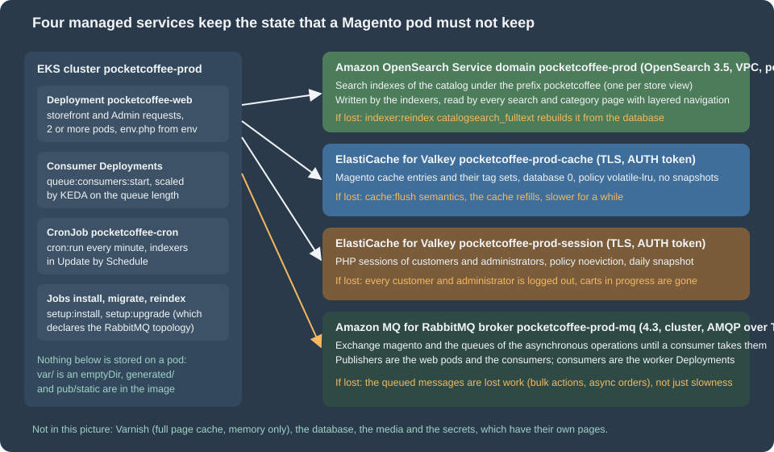
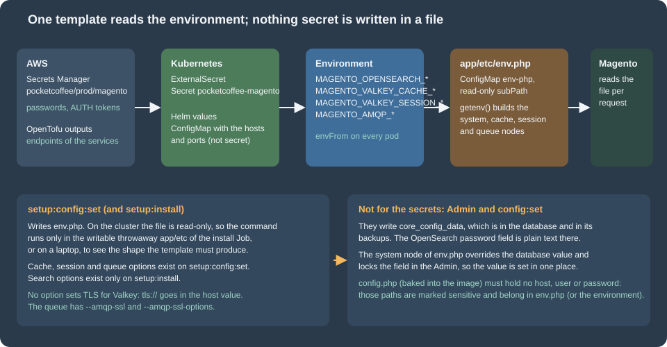

Cloud: OpenSearch, Valkey and RabbitMQ as Managed Services
|
This content was generated with the assistance of AI and should be verified against the official documentation before being relied on in production. |
This page was written against Magento Open Source and Adobe Commerce 2.4.9 (general availability 2026-05-12) and Mage-OS 3.6.0, whose source tag was read for every statement about options and code; Amazon OpenSearch Service with OpenSearch 3.5, ElastiCache for Valkey (engines 9.0 and 9.1, parameter group family valkey9), Amazon MQ for RabbitMQ 4.3, the AWS provider ~> 6.70 for OpenTofu 1.12, and Kubernetes 1.36 and 1.37 on EKS. It was checked on 2026-10-29. Adobe’s system requirements for 2.4.9 list OpenSearch 3, Valkey 9 and RabbitMQ 4.3 as the tested versions, and the AWS services above carry those versions. Nothing was deployed in an AWS account: the OpenTofu was validated against the provider schema (tofu validate) and the PHP and shell listings were syntax-checked, but no pod talked to a real domain, replication group or broker, and the places where that matters are named in What was run and what was not.
On a single server Magento finds OpenSearch, Valkey and RabbitMQ on localhost or on the Docker network and they are started by the same person who installed Magento. On a cluster they become three separate managed services with their own endpoints, TLS and credentials, and three questions appear: how does each service get configured, which of Magento’s options reach it, and what breaks when it is unreachable. This page answers them for the shop of the running example, Pocket Coffee on the cluster pocketcoffee-prod, and ends with the configuration that every pod reads. The architecture around it is in Cloud: Reference Architecture, the database in Cloud: Managed Database (RDS and Aurora), the consumers that read the queues in Cloud: Cron, Queue Consumers and Indexers, and the full page cache, which is Varnish and not Valkey, in Cloud: Varnish and Full Page Cache on Kubernetes. What each cache type does and how the single-server tuning works is on Caching, Indexing and Performance and the message queue framework on CLI, Cron and Message Queues; neither is repeated here.

What each service holds
A service may be a cache that can be lost, a store that must not be, or something in between, and the choice of node type, replication, snapshots and eviction follows from that. The table lists what Magento writes into each service, which part of the shop reads it, and what happens if it disappears.
| Service | What Magento stores in it | Read by | If it is lost |
|---|---|---|---|
Amazon OpenSearch Service |
One index per indexed store view, named after the index prefix ( |
Search results, category pages with layered navigation, the GraphQL and REST product searches. |
The storefront shows no products in category and search pages. Rebuild with |
ElastiCache for Valkey, group |
Cache entries of the cache types (configuration, layout, block HTML, translations, EAV, and so on) and their tag sets, in database 0. |
Every request, before it touches the database or the file system. |
Nothing is lost for good: the entries are rebuilt from the database and the files, and the shop is slower until they are. |
ElastiCache for Valkey, group |
PHP sessions of customers and administrators, including the quote in progress that belongs to a session, in database 0 of its own group. |
Every request that has a session cookie; the storefront and the Admin. |
Everybody is logged out and a cart that exists only in the session is gone. An Admin user loses unsaved forms. |
Amazon MQ for RabbitMQ, broker |
The exchange |
The consumer Deployments, started by |
The messages in the lost queues are lost work, not just slowness. The topology is recreated by |
Three things are not in the table because they do not live in a managed service of this page: the full page cache is Varnish (memory only, The full page cache is not here), the catalog data is in the database, and the media are in S3 or EFS. Nothing else needs a state service, because the generated/ and pub/static/ directories are baked into the image and var/ is a per-pod emptyDir.
How the configuration reaches Magento
Magento has four places for a setting and they behave differently on a cluster.
-
app/etc/env.phpholds the settings that belong to one environment: the database, the cryptographic key, the cache and session backends, the queue connection and, in itssystemnode, any store configuration value that must be fixed for that environment. On the cluster it is not written by anything at run time; it is the template of the ConfigMappocketcoffee-env-php, mounted read-only, that reads every value withgetenv()(the template itself and its mounting are in Cloud: EKS Infrastructure and Helm Deployment). -
app/etc/config.phpholds the module list and the store configuration shared by all environments. It is committed and baked into the image, so nothing environment-specific, and nothing secret, belongs in it. -
The table
core_config_dataholds what the Admin andbin/magento config:setsave. It is in the database, so it is in every backup of it. -
Environment variables named
CONFIG__DEFAULT__<PATH>(with each slash of the configuration path written as two underscores) override store configuration values without a file. They are an alternative to thesystemnode; this page uses the node because the template already reads the environment and the result is visible in one file.
Adobe states which of them hold sensitive values: they "must be set using either environment variables or the magento config:sensitive:set command", and the system-specific values (those that differ per environment) are kept in env.php. The precedence is environment variables first, then env.php, then config.php, then the database; the English page of Adobe does not spell that order out, so confirm it on your version with bin/magento config:show catalog/search/opensearch_server_hostname, which prints the effective value.

What setup:config:set covers
bin/magento setup:config:set is the command that writes env.php on a single server, and the installer accepts the same options. On the cluster it is not run by the pods, because the file is read-only; it is still worth knowing, for two reasons. The first Job (pocketcoffee-install) runs setup:install in a writable throwaway app/etc and throws the generated file away, so the options of setup:install are what that Job uses; and on a laptop the command shows exactly which nodes Magento writes, so the template can be written to match. The options exist for three of the four services and not for the fourth:
| Service | setup:config:set options (Mage-OS 3.6.0 source) |
What is missing |
|---|---|---|
OpenSearch |
None. The search options ( |
Everything, after the installation. Use the |
Valkey cache |
|
TLS. There is no option for it; the scheme goes in the server value (TLS and the AUTH token). |
Valkey sessions |
|
TLS, as for the cache. |
RabbitMQ |
|
Nothing for TLS: |
The search row corrects a common assumption. A guide that says "configure the search engine with setup:config:set --search-engine=opensearch`" is wrong for 2.4.9: `SearchConfigOptionsList is registered only by InstallCommand, and the command that writes the values is setup:install, which stores them in core_config_data through Magento\Search\Setup\InstallConfig. The redis and valkey spellings of the cache and session options write the same env.php nodes. The Valkey spelling is new in 2.4.9 and is the one Adobe documents; the redis spelling still works against Valkey (the existing page on caching ran with it), and the session node of env.php is still called redis for Valkey, because the session configuration class reads the paths session/redis/*. Both spellings are shown below, with the one used in the template stated.
The commands for the cache, the sessions and the queue, with the values read from the environment of the pod (the same names as in the secret and the ConfigMap of the cluster page):
#!/usr/bin/env bash
# Run in the writable throwaway app/etc of the install Job (or on a laptop) to see
# the shape that setup:config:set writes. Secrets come from the environment of the pod.
set -euo pipefail
cd /var/www/html
# Cache (database 0 of its own replication group). tls:// is part of the server value.
bin/magento setup:config:set --no-interaction \
--cache-backend=redis \
--cache-backend-redis-server="tls://${MAGENTO_VALKEY_CACHE_HOST}" \
--cache-backend-redis-port=6379 \
--cache-backend-redis-db=0 \
--cache-backend-redis-password="${MAGENTO_VALKEY_CACHE_AUTH_TOKEN}" \
--cache-id-prefix=pc_
# Sessions (its own replication group).
bin/magento setup:config:set --no-interaction \
--session-save=redis \
--session-save-redis-host="tls://${MAGENTO_VALKEY_SESSION_HOST}" \
--session-save-redis-port=6379 \
--session-save-redis-db=0 \
--session-save-redis-password="${MAGENTO_VALKEY_SESSION_AUTH_TOKEN}"
# Queue: Amazon MQ for RabbitMQ over TLS. --amqp-ssl takes the string true.
bin/magento setup:config:set --no-interaction \
--amqp-host="${MAGENTO_AMQP_HOST}" \
--amqp-port=5671 \
--amqp-user="${MAGENTO_AMQP_USER}" \
--amqp-password="${MAGENTO_AMQP_PASSWORD}" \
--amqp-virtualhost=/ \
--amqp-ssl=true \
--amqp-ssl-options='{"cafile":"/etc/ssl/certs/ca-certificates.crt","verify_peer":true,"verify_peer_name":true}' \
--queue-default-connection=amqpsetup:config:set validates what it is given: the cache and session validators open a connection with the Credis client (the same client the backends use, so a tls:// host is accepted) and the queue validator connects to the broker. A command with a wrong host therefore fails at once, which is useful on a laptop and a trap in a Job that runs before the services exist. The search options of the first installation look like this; the first Job runs it once and discards the generated env.php:
#!/usr/bin/env bash
# First installation only: the search options exist on setup:install, not on setup:config:set.
set -euo pipefail
cd /var/www/html
bin/magento setup:install --no-interaction \
--base-url="${MAGENTO_BASE_URL}" \
--backend-frontname="${MAGENTO_BACKEND_FRONTNAME}" \
--db-host="${MAGENTO_DB_HOST}" \
--db-name="${MAGENTO_DB_NAME}" \
--db-user="${MAGENTO_MIGRATE_DB_USER}" \
--db-password="${MAGENTO_MIGRATE_DB_PASSWORD}" \
--key="${MAGENTO_CRYPT_KEY}" \
--search-engine=opensearch \
--opensearch-host="https://${MAGENTO_OPENSEARCH_HOST}" \
--opensearch-port=443 \
--opensearch-index-prefix=pocketcoffee \
--opensearch-enable-auth=1 \
--opensearch-username="${MAGENTO_OPENSEARCH_USER}" \
--opensearch-password="${MAGENTO_OPENSEARCH_PASSWORD}"--key is the encryption key: it is the secret reference MAGENTO_CRYPT_KEY of the secret pocketcoffee/prod/magento, created once for the installation (from the existing installation when you migrate, see Cloud: Migrating from a Single Server) and never typed or generated in a listing. The installer also writes the OpenSearch password into core_config_data in clear text, which is the reason for the next section’s rule: the values of The system node of env.php override it and the Job should not be the final word. Whether the installer is the right tool at all for a cluster, and how the Job is arranged, belongs to the cluster page.
The template reads the environment through one helper, so a missing variable stops PHP with a clear message instead of silently writing an empty host. This is the opening of the template and the part shared by the fragments of the next sections (the complete file also has the database, the key and the other nodes, which are on the cluster page):
<?php
// app/etc/env.php (fragment of the template mounted from the ConfigMap pocketcoffee-env-php).
// Only the three managed services are shown; db, crypt, backend and the rest are on the sibling pages.
// Every value comes from the environment of the pod; nothing secret is written in the file.
$env = static function (string $name, ?string $default = null): string {
$value = getenv($name);
if ($value === false || $value === '') {
if ($default === null) {
throw new RuntimeException("Environment variable $name is not set");
}
return $default;
}
return $value;
};
return [
// ... the nodes 'system', 'cache', 'session', 'queue' and 'cron_consumers_runner' of the next sections
];Amazon OpenSearch Service
The domain
Adobe’s system requirements for 2.4.9 name OpenSearch 3, and Amazon OpenSearch Service offers 3.5, 3.3 and 3.1 beside the 2.x lines (the engine version is written OpenSearch_3.5). 3.5 is the version of the page. AWS has not announced an end of standard support for 3.1 and later, while 2.19 ends standard support on 2027-11-07; a new domain therefore starts on 3.x. The existing pages of this site run the local test shop on OpenSearch 3.9.0 from the Docker Hub image; the managed service is behind that version, so a feature that appeared between 3.5 and 3.9 is not in the domain. Magento 2.4.9 needs nothing that specific, but test on the version you deploy. Everything about creating and sizing a domain (dedicated master nodes, UltraWarm, Serverless as an alternative) is on OpenSearch and search on AWS and not repeated; this page is about what Magento needs from it.
A Magento domain is a modest one. The data is a copy of the catalog, rebuilt by an indexer, so the size is set by the catalog (products times store views times attributes that are searchable or filterable), not by traffic that writes. The decisions that matter:
-
VPC access. The domain lives in the private subnets, one per Availability Zone, behind a security group that allows port 443 only from the node security group of the cluster. There is no public endpoint to protect. The endpoint is
vpc-<domain>-<id>.eu-west-1.es.amazonaws.com, and Magento reaches it by name, so the pods need DNS (the VPC resolver is enough). -
Three data nodes in three zones, replicas of 1. With zone awareness a lost zone leaves a copy of every shard. Magento creates its indexes with its own shard and replica settings from the index template of the OpenSearch module; those numbers were not verified here, so read them from the created index (
_cat/indicesin First start, verification and what to expect) and size for them. A single-node domain is acceptable in staging and has no copy of anything. -
Encryption. Fine-grained access control requires HTTPS for all traffic, encryption at rest and node-to-node encryption, so all three are on.
-
Instance type.
m7g.large.searchis an example from the Graviton family; check which types the Region offers for 3.5 before choosing, and give the JVM heap (half of the memory of the node, up to the limit AWS documents) room for the largest index of the catalog.
Authentication: the internal user database, not an IAM master user
Magento’s OpenSearch client sends HTTP basic authentication, built from the options opensearch_username and opensearch_password, and does not sign requests with AWS Signature Version 4. AWS documents the consequence: if the master user is an IAM principal, every request must be signed; if it is a user of the internal user database, "you can use HTTP basic authentication (as well as IAM credentials)". Two settings follow.
-
The master user is a user of the internal user database (
magentoin the example). In OpenTofu it isinternal_user_database_enabled = trueand amaster_user_optionsblock. -
The domain access policy must not name IAM principals: AWS notes that "access policies can conflict with fine-grained access control, especially if you use the internal user database and HTTP basic authentication", because a request cannot carry both a password and IAM credentials. With fine-grained access control enabled, AWS recommends a policy that does not require signed requests. The example policy allows
es:ESHttp*for any principal and relies on the two other layers: the VPC with its security group, and the user and role mapping inside OpenSearch.
The master user has all rights in the cluster, which is more than Magento needs. A better design creates a second internal user for Magento, maps it to a role that is limited to the index pattern pocketcoffee_* and to the cluster actions Magento uses, and keeps the master user for operators. What exactly that role needs (creating and deleting indexes, aliases, templates, bulk writes, search) was not derived from the Magento source and Adobe does not document it; build the role in OpenSearch Dashboards by trial against a staging domain, watching the 403 errors of the Magento log, before using it in production. The page keeps the master user in the examples because it is the one that works without that exercise.
The scheme is part of the host name, and the password is part of a URL
Two details of the client decide whether a managed domain works, and neither is in Adobe’s text. In Magento\OpenSearch\Model\SearchClient (the class that builds the connection), the configured host name is split: any http:// or https:// prefix is removed, the scheme found in it is kept and, if there was none, http is used; then the client builds <scheme>://<user>:<password>@<host>:<port>. The consequences are:
-
The host name must be written
https://vpc-pocketcoffee-prod-example.eu-west-1.es.amazonaws.com. With the bare name and port 443 the client speaks plain HTTP to a TLS port and the connection fails (the installer reports that it cannot reach the search engine). There is no separate TLS option in the Admin or in the options of the installer; the scheme in the host name is the whole of it. The template therefore prependshttps://to the variable, so the ConfigMap holds the bare endpoint that the OpenTofu output prints. -
The user name and the password are written into the URL without escaping. A password with
@,:,/,?or#breaks the URL. The example generates the master password with letters and digits only (special = false); if you must use a policy that requires symbols, test the exact characters against the client first. -
Certificate verification. The domain certificate is issued by Amazon and the system CA store of the image trusts it; the client does not expose an option to disable the check, and you should not look for one. If the pods cannot verify the endpoint, the cause is a custom CA bundle or an old
ca-certificatespackage in the image (see Cloud: Container Image and Pipeline Build).
Source: Mage-OS: SearchClient.php
The system node of env.php
The Admin fields live under catalog/search: engine, opensearch_server_hostname, opensearch_server_port, opensearch_index_prefix, opensearch_enable_auth, opensearch_username, opensearch_password, opensearch_server_timeout (and opensearch_minimum_should_match, which the shop does not need). In the source the password field is a plain text field without a backend model, so what it saves is clear text in core_config_data, and Magento_OpenSearch lists the hostname, the user name and the password in the sensitive configuration of Magento\Config\Model\Config\TypePool. The template fixes all of them:
// Inside the array returned by the template.
// Search: values for the `system` scope override config.php and core_config_data and are read-only in the Admin.
'system' => [
'default' => [
'catalog' => [
'search' => [
'engine' => 'opensearch',
// The scheme is part of the host name: without https:// the client connects over plain HTTP.
'opensearch_server_hostname' => 'https://' . $env('MAGENTO_OPENSEARCH_HOST'),
'opensearch_server_port' => $env('MAGENTO_OPENSEARCH_PORT', '443'),
'opensearch_index_prefix' => $env('MAGENTO_OPENSEARCH_PREFIX', 'pocketcoffee'),
'opensearch_enable_auth' => '1',
'opensearch_username' => $env('MAGENTO_OPENSEARCH_USER'),
'opensearch_password' => $env('MAGENTO_OPENSEARCH_PASSWORD'),
'opensearch_server_timeout' => '15',
],
],
],
],Because the node is in env.php, the values are the same on every pod, they follow the environment (staging has its own domain and prefix) and nothing about the domain is in the image. Do not rely on app:config:dump for these paths: config.php is committed, and a dump taken on a developer machine would put its local localhost there. Check the effective value on a pod (bin/magento config:show catalog/search/opensearch_server_hostname) after the first deployment, and look in core_config_data for stale rows with select path, value from core_config_data where path like 'catalog/search/%'; the node wins over them, and the old rows are a reason for confusion when someone changes the database value in the Admin and nothing happens.
The index prefix
An index is named <prefix>_product_<store view id>_v<version>. The prefix is the namespace of the installation: two Magento installations that share a domain must have different prefixes or one deletes the other’s indexes when it reindexes. The prefix of the example is pocketcoffee; staging uses pocketcoffee_stg on its own domain, and a copy of the production database restored for a test must not reuse the production prefix against the production domain, because the first full reindex of the test would replace the indexes the shop is reading. Changing the prefix of a running shop leaves the storefront without an index until the indexer has rebuilt the new one, so do it as a planned change (First start, verification and what to expect) and not in the middle of a deployment. Adobe’s text on the field says the same: use a unique prefix per installation if one instance serves several.
OpenTofu
The domain, its security group and the master password, with the three security prerequisites of fine-grained access control spelled out (encrypt_at_rest, node_to_node_encryption, enforce_https). The VPC, the private subnets, the node security group and the KMS key are those of the root module of the cluster page and are variables here, so the file validates by itself:
variable "vpc_id" {
type = string
}
variable "private_subnet_ids" {
description = "Three private subnets, one per Availability Zone."
type = list(string)
}
variable "node_security_group_id" {
description = "Security group of the EKS nodes (module.eks.cluster_primary_security_group_id)."
type = string
}
variable "kms_key_arn" {
type = string
}
locals {
name = "pocketcoffee-prod"
}
resource "aws_security_group" "opensearch" {
name_prefix = "${local.name}-opensearch-"
description = "HTTPS to OpenSearch from the cluster nodes"
vpc_id = var.vpc_id
lifecycle {
create_before_destroy = true
}
}
resource "aws_vpc_security_group_ingress_rule" "opensearch_from_cluster" {
security_group_id = aws_security_group.opensearch.id
referenced_security_group_id = var.node_security_group_id
from_port = 443
to_port = 443
ip_protocol = "tcp"
description = "HTTPS from pods on EKS nodes"
}
# Master user password: special characters stay out because Magento puts the user name
# and the password into the URL it connects to (see the page text).
resource "random_password" "opensearch" {
length = 32
special = false
}
resource "aws_opensearch_domain" "magento" {
domain_name = local.name
engine_version = "OpenSearch_3.5"
cluster_config {
instance_type = "m7g.large.search"
instance_count = 3
zone_awareness_enabled = true
dedicated_master_enabled = false
zone_awareness_config {
availability_zone_count = 3
}
}
ebs_options {
ebs_enabled = true
volume_type = "gp3"
volume_size = 50
}
vpc_options {
subnet_ids = var.private_subnet_ids
security_group_ids = [aws_security_group.opensearch.id]
}
encrypt_at_rest {
enabled = true
kms_key_id = var.kms_key_arn
}
node_to_node_encryption {
enabled = true
}
domain_endpoint_options {
enforce_https = true
tls_security_policy = "Policy-Min-TLS-1-2-2019-07"
}
# Fine-grained access control with the internal user database: Magento sends
# HTTP basic authentication and cannot sign requests with AWS Signature Version 4.
advanced_security_options {
enabled = true
internal_user_database_enabled = true
master_user_options {
master_user_name = "magento"
master_user_password = random_password.opensearch.result
}
}
# Not an IAM-principal policy: such a policy would require signed requests and
# reject basic authentication. The network (VPC and security group) and the
# master user are the two layers that protect the domain.
access_policies = jsonencode({
Version = "2012-10-17"
Statement = [{
Effect = "Allow"
Principal = { AWS = "*" }
Action = "es:ESHttp*"
Resource = "arn:aws:es:eu-west-1:123456789012:domain/${local.name}/*"
}]
})
tags = {
Component = "magento-search"
}
}
output "opensearch_endpoint" {
value = aws_opensearch_domain.magento.endpoint
}The password is generated by the random provider and therefore lands in the OpenTofu state, which is why the state bucket of the cluster page is encrypted and restricted; the value is copied into the JSON key opensearch_password of the secret pocketcoffee/prod/magento by the same configuration (the whole secret is assembled on the cluster page, with the keys of the three services here and the others). Rotating it is a change of the master_user_password followed by a rolling restart of the pods, because the value is read from the environment when a pod starts. The security group of the pods is a source, never a CIDR, so that the rule follows the nodes.
First start, verification and what to expect
Three commands, run from a pod of the web Deployment (kubectl exec), prove the chain: the cluster health, the indexes of the prefix (which exist only after the first reindex), and then the Magento side. The script also covers Valkey and RabbitMQ, which are explained in the next sections:
#!/usr/bin/env bash
# From a pod of the web Deployment: reach each managed service with the credentials of the pod.
set -euo pipefail
# OpenSearch: cluster health and the indices of the shop.
curl -sS --fail -u "${MAGENTO_OPENSEARCH_USER}:${MAGENTO_OPENSEARCH_PASSWORD}" \
"https://${MAGENTO_OPENSEARCH_HOST}/_cluster/health?pretty"
curl -sS --fail -u "${MAGENTO_OPENSEARCH_USER}:${MAGENTO_OPENSEARCH_PASSWORD}" \
"https://${MAGENTO_OPENSEARCH_HOST}/_cat/indices/pocketcoffee_*?v"
# Valkey: TLS handshake, AUTH and a round trip (valkey-cli reads the password from the environment).
VALKEYCLI_AUTH="${MAGENTO_VALKEY_CACHE_AUTH_TOKEN}" \
valkey-cli --tls -h "${MAGENTO_VALKEY_CACHE_HOST}" -p 6379 ping
VALKEYCLI_AUTH="${MAGENTO_VALKEY_SESSION_AUTH_TOKEN}" \
valkey-cli --tls -h "${MAGENTO_VALKEY_SESSION_HOST}" -p 6379 info keyspace
# RabbitMQ: queues through the management API on port 443 of the broker (the console endpoint).
curl -sS --fail -u "${MAGENTO_AMQP_USER}:${MAGENTO_AMQP_PASSWORD}" \
"https://${MAGENTO_AMQP_HOST}/api/queues/%2F?columns=name,messages,consumers"The health of a fresh domain is green with three nodes and replicas of 1, and yellow with a single node (replicas cannot be placed). After the first indexer:reindex catalogsearch_fulltext, the second command lists one index per store view with the prefix. A reindex that fails with a 403 is a role problem (the mapping of the user), one that fails with a connection error is the scheme or the security group, and one that fails with a 401 is the password. The image used for the pods needs curl for these checks, and valkey-cli is only needed for the diagnostic pod, not in the shop image.
ElastiCache for Valkey
Two replication groups, one per purpose
Adobe’s advice, in its Valkey page, is to use "a dedicated instance for each session, Commerce cache, and FPC", to give the cache instance enough memory to store the whole cache and no persistence ("the Commerce cache can be restored"), and to enable persistence for sessions. On this stack the full page cache is Varnish, so there are two groups: pocketcoffee-prod-cache and pocketcoffee-prod-session. Both are replication groups with cluster mode disabled (one primary and a replica, the primary endpoint), Multi-AZ with automatic failover, encryption at rest, TLS in transit and an AUTH token. Cluster mode is not chosen: Adobe’s text describes a single Valkey server per purpose (and Sentinel for failover), and Magento’s key layout (tag sets that must live in one place) has no documented cluster mode support. The existing page on Caching, Indexing and Performance lists the databases of one server (0 for the cache, 1 for the built-in full page cache, 2 for sessions); with two groups the cache is database 0 of its group and the sessions are database 0 of theirs, so that one flush can never touch the other.
| Setting | pocketcoffee-prod-cache |
pocketcoffee-prod-session |
|---|---|---|
Content |
Cache entries and tag sets |
PHP sessions |
Eviction policy ( |
|
|
Snapshots |
None ( |
Daily, one day kept |
Size |
At least the size of the cache in |
Peak simultaneous sessions times the session size, with a wide margin |
If the memory is full |
Entries are evicted; the hit rate drops |
New sessions are refused: write errors in the log and a storefront that cannot start a session |
The eviction policy of the cache group is a decision that Adobe’s documentation does not take for you: its Valkey page does not mention maxmemory-policy, and the ElastiCache default is volatile-lru. The Magento Redis backend (Cm_Cache_Backend_Redis) writes its cache entries with an expiry (capped at 30 days) and keeps the tag sets as keys without one, so volatile-lru evicts entries but never the tag sets; allkeys-lru could also evict a tag set and leave entries that no longer clean by tag, which is the reason the example does not use it. That is a reading of the backend code, not an Adobe recommendation, so treat the policy as something to confirm in staging: fill the group, watch the Evictions metric, and run cache:clean for a tag to see that it still cleans. The sessions are the opposite case: an evicted session logs a customer out and empties a cart in progress, so noeviction refuses new writes instead and an alarm on DatabaseMemoryUsagePercentage is part of operating the group (see Cloud: Autoscaling, Observability, Backups and Security).
TLS and the AUTH token
ElastiCache offers in-transit encryption (TLS) and an AUTH token for replication groups, and the token can only be enabled together with TLS. The token must be 16 to 128 printable characters, and the only non-alphanumeric characters it allows are !, &, #, $, ^, <, > and -; the example uses 48 letters and digits. AWS notes that AUTH is superseded by role-based access control (RBAC) and that Secrets Manager can rotate RBAC passwords; Magento’s cache and session clients send a password only, which is what the default user with a token accepts, so the example uses AUTH and keeps RBAC out of the picture. If your security policy requires per-application users, check first that your version of the clients can send a user name; the constructor of Credis 1.17.0, the version read here, accepts one, but the Magento options do not expose it.
Neither Adobe’s Valkey pages nor the options of setup:config:set mention TLS, and the Adobe env.php reference shows plain server and host values. In the code the connection is made by the Credis client (colinmollenhour/credis), used by both Magento’s cache backend and its session handler and by the connection validator of the CLI. Credis reads a scheme in the host value: tcp://, tls://, ssl://, tlsv1.2://, or unix://, with an optional port after the host. So TLS is switched on with tls:// in front of the host, in the server option of the cache and in the host option of the session, with the port in its own option:
| Where | Value | Written by |
|---|---|---|
|
|
|
|
|
|
Source: Credis: Client.php
When PHP has the redis extension, Credis hands the scheme and host to it; when it does not, Credis opens the stream itself with stream_socket_client and the default TLS context of PHP, which verifies the certificate against the system store. The certificate of an ElastiCache endpoint is issued by Amazon, so the verification passes with a normal ca-certificates bundle. No connection to a real group was made and the two code paths (extension and stream) were not compared; test both if the image has the extension, as the failure is a connect error in the log and /health_check.php returns 500 (see What breaks when a service is unreachable). Adobe documents none of this, so the page states it as read from the code and not as an Adobe-supported setting.
The cache in env.php
// Cache: one replication group, TLS (tls:// prefix) and the AUTH token. No page_cache frontend: Varnish is the full page cache.
'cache' => [
'frontend' => [
'default' => [
'id_prefix' => 'pc_',
'backend' => 'redis',
'backend_options' => [
'server' => 'tls://' . $env('MAGENTO_VALKEY_CACHE_HOST'),
'port' => '6379',
'database' => '0',
'password' => $env('MAGENTO_VALKEY_CACHE_AUTH_TOKEN'),
'compress_data' => '1',
'compression_lib' => '',
'serializer' => 'igbinary',
'use_lua' => '0',
'use_lua_on_gc' => '1',
],
],
],
'allow_parallel_generation' => false,
],The backend value is redis, the identifier the existing page ran against Valkey 9.1.3 on the test shop; 2.4.9 also has the identifier valkey (Magento\Framework\Cache\Backend\Valkey is a subclass of the Redis backend that only changes the type identifier), which is what --cache-backend=valkey writes. Either works; use the same one in every environment. id_prefix stays explicit so that a build that never touches Valkey and a pod that does agree on the keys. igbinary needs the PHP extension in the image (the page on the image says how to build it). The existing page on caching ran its test shop without the extension and the paths it exercised still worked, so the serializer is not checked on every path; install the extension and keep igbinary, or write 'serializer' => 'php' in the template, and do not leave the value without the extension. The page_cache frontend is deliberately absent: with Varnish selected as the full page cache the built-in frontend is unused, and pub/health_check.php walks every defined frontend, so an unused frontend would only add a failure point (see What breaks when a service is unreachable). Do not define it unless you switch the full page cache to the built-in one.
The full page cache is not here
Magento’s built-in full page cache can live in Valkey (database 1 of the single-server layout) and is a PHP script that reads it, which is why Adobe recommends Varnish for production. On the cluster it is Varnish, a StatefulSet of memory-only caches in front of the web pods, with Magento purging them over HTTP; that is a different state with different rules and is the whole of Cloud: Varnish and Full Page Cache on Kubernetes. Switching system/full_page_cache/caching_application to Varnish does not need a Valkey group of its own, and the cache group of this page is not sized for a built-in full page cache.
Sessions in env.php
// Sessions: the other replication group. The node is called `redis` even for Valkey.
'session' => [
'save' => 'redis',
'redis' => [
'host' => 'tls://' . $env('MAGENTO_VALKEY_SESSION_HOST'),
'port' => '6379',
'password' => $env('MAGENTO_VALKEY_SESSION_AUTH_TOKEN'),
'database' => '0',
'timeout' => '2.5',
'persistent_identifier' => '',
'compression_threshold' => '2048',
'compression_library' => 'gzip',
'log_level' => '1',
'max_concurrency' => '6',
'break_after_frontend' => '5',
'break_after_adminhtml' => '30',
'first_lifetime' => '600',
'bot_first_lifetime' => '60',
'bot_lifetime' => '7200',
'disable_locking' => '0',
'min_lifetime' => '60',
'max_lifetime' => '2592000',
],
],The values are Adobe’s defaults for every option except the host, the port, the password and the database, so a reader can compare them with the table of that page. The session handler locks a session while a request uses it, so that two concurrent requests of one browser do not overwrite each other: max_concurrency is how many processes may wait for one lock, break_after_frontend and break_after_adminhtml are the seconds after which a lock is broken, and disable_locking turns the mechanism off at the price of lost updates. With several pods the lock is held in Valkey, so it works across pods, which is the point of the move off the file system. Do not set disable_locking to speed up the Admin; the Admin uses long requests (imports, grids) and a broken lock is worse than a wait. A failover of the replication group moves the primary endpoint to the promoted replica in a minute or so; connections break, requests fail and the next ones succeed, and the sessions that were not yet replicated are lost, which is the reason the group has a replica and a daily snapshot and not a guarantee. persistent_identifier stays empty because persistent connections interact badly with a DNS change on failover; This was not measured, so test a failover in staging (aws elasticache test-failover) with a loop of requests running.
Sessions are not a rolling-update problem: a new pod reads the same group with the same token, so a customer keeps the session across releases. That holds only as long as the crypt/key is the same on every pod and every release, because the session data of the Admin and the form keys depend on it (see Cloud: Releases and Zero-Downtime Deployments).
OpenTofu
resource "aws_security_group" "valkey" {
name_prefix = "${local.name}-valkey-"
description = "Valkey from the cluster nodes"
vpc_id = var.vpc_id
lifecycle {
create_before_destroy = true
}
}
resource "aws_vpc_security_group_ingress_rule" "valkey_from_cluster" {
security_group_id = aws_security_group.valkey.id
referenced_security_group_id = var.node_security_group_id
from_port = 6379
to_port = 6379
ip_protocol = "tcp"
description = "Valkey from pods on EKS nodes"
}
resource "aws_elasticache_subnet_group" "magento" {
name = local.name
subnet_ids = var.private_subnet_ids
}
# AUTH tokens: 16 to 128 characters, and ElastiCache allows only ! & # $ ^ < > - as
# non-alphanumeric characters; alphanumeric only is the simplest valid choice.
resource "random_password" "valkey" {
for_each = toset(["cache", "session"])
length = 48
special = false
}
# Cache: can be rebuilt, no snapshots. ElastiCache's default policy volatile-lru is kept.
resource "aws_elasticache_parameter_group" "cache" {
name = "${local.name}-cache-valkey9"
family = "valkey9"
description = "Magento cache"
parameter {
name = "maxmemory-policy"
value = "volatile-lru"
}
}
# Sessions: never evicted, snapshots daily.
resource "aws_elasticache_parameter_group" "session" {
name = "${local.name}-session-valkey9"
family = "valkey9"
description = "Magento sessions"
parameter {
name = "maxmemory-policy"
value = "noeviction"
}
}
resource "aws_elasticache_replication_group" "cache" {
replication_group_id = "${local.name}-cache"
description = "Magento cache for ${local.name}"
engine = "valkey"
engine_version = "9.0"
node_type = "cache.r7g.large"
port = 6379
parameter_group_name = aws_elasticache_parameter_group.cache.name
num_cache_clusters = 2
automatic_failover_enabled = true
multi_az_enabled = true
subnet_group_name = aws_elasticache_subnet_group.magento.name
security_group_ids = [aws_security_group.valkey.id]
at_rest_encryption_enabled = true
kms_key_id = var.kms_key_arn
transit_encryption_enabled = true
auth_token = random_password.valkey["cache"].result
snapshot_retention_limit = 0
}
resource "aws_elasticache_replication_group" "session" {
replication_group_id = "${local.name}-session"
description = "Magento sessions for ${local.name}"
engine = "valkey"
engine_version = "9.0"
node_type = "cache.r7g.large"
port = 6379
parameter_group_name = aws_elasticache_parameter_group.session.name
num_cache_clusters = 2
automatic_failover_enabled = true
multi_az_enabled = true
subnet_group_name = aws_elasticache_subnet_group.magento.name
security_group_ids = [aws_security_group.valkey.id]
at_rest_encryption_enabled = true
kms_key_id = var.kms_key_arn
transit_encryption_enabled = true
auth_token = random_password.valkey["session"].result
snapshot_retention_limit = 1
snapshot_window = "02:00-03:00"
}
output "valkey_cache_primary_endpoint" {
value = aws_elasticache_replication_group.cache.primary_endpoint_address
}
output "valkey_session_primary_endpoint" {
value = aws_elasticache_replication_group.session.primary_endpoint_address
}The node type is an example; the cache group is sized by the rule of the table above and the node type of the session group by its sessions. engine_version = "9.0" pins the major and minor and lets ElastiCache choose the patch; use 9.1 if you want the newer minor, The primary endpoint prints as master.<group>.<id>.euw1.cache.amazonaws.com; with cluster mode disabled it is the name to put in the ConfigMap, and the replicas are for failover, not for reads, because Magento’s cache and session options have no read-replica setting in the options above.
Rotating a token
The token changes in two steps so that the pods never lose access (the ROTATE and SET strategies of modify-replication-group, available for Valkey 7.2 and later with TLS): ROTATE adds the new token and keeps the old one, so the group accepts two; the secret is updated and the pods are restarted (the token is read from the environment at start, so kubectl rollout restart on the web, consumer and cron workloads, and the next CronJob run picks it up); SET then removes the old token. Do not run SET before every pod has restarted. The ExternalSecret refresh updates the Kubernetes Secret, but an environment variable of a running container does not change until the container restarts.
Amazon MQ for RabbitMQ
The broker
Amazon MQ for RabbitMQ recommends 4.3, supports 4.3 and 4.2 on the mq.m7g instance family only, and 3.13 on mq.t3, mq.m5 and mq.m7g; Adobe’s 2.4.9 table lists RabbitMQ 4.3. A new broker needs only the major and minor version ("RabbitMQ 4.3"). Two facts of the service shape how Magento uses it.
-
Two deployment modes. A single-instance broker is one node in one Availability Zone behind a Network Load Balancer; a cluster deployment is three nodes in three zones behind a Network Load Balancer, sharing users, queues and state. The example uses the cluster (
CLUSTER_MULTI_AZ) in production and a single instance in staging. AWS says that during a maintenance window a cluster is updated one node at a time and "client connections to that node are severed" and the client must reconnect automatically; Magento’s consumers arequeue:consumers:startprocesses that exit when a connection breaks and are restarted by the Deployment, which gives that behaviour, and the publisher side raises an error to the request that tried to publish. Keep the maintenance window of the broker outside the daily peak. -
RabbitMQ 4 and queue types. The AWS page for RabbitMQ 4 says the default queue type on 4.2 brokers is
quorum("if no queue type argument is specified during queue creation, a quorum queue will be created") and recommends quorum queues for durability, because classic queues are "not guaranteed to be durable in all cases". The cluster page of AWS still describes classic mirroring across the nodes, which RabbitMQ 4 removed; That contradiction was not resolved here, so read the effective policy and queue types on your broker after the firstsetup:upgrade(the management console, or the API call in the verification script). Magento declares its queues as durable, with theargumentsof the topology (empty by default), so on a 4.x broker they should be quorum queues; check this, because the properties of quorum queues (no non-durable queues, no exclusive queues, different behaviour for message TTL and priorities) apply to any module that declares queues with other arguments inqueue_topology.xml.
Amazon MQ for RabbitMQ does not support streams ("creating a stream will result in data loss"), which Magento does not use, and it does not vend per-queue metrics to CloudWatch for RabbitMQ 4 (only broker-level metrics); the queue length that KEDA scales on is read from the RabbitMQ management API, as in Cloud: Cron, Queue Consumers and Indexers.
Source: Amazon MQ: RabbitMQ 4
The queue node of env.php
// Queue: Amazon MQ for RabbitMQ over TLS. `ssl` is the string 'true', not a boolean.
'queue' => [
'default_connection' => 'amqp',
'amqp' => [
'host' => $env('MAGENTO_AMQP_HOST'),
'port' => $env('MAGENTO_AMQP_PORT', '5671'),
'user' => $env('MAGENTO_AMQP_USER'),
'password' => $env('MAGENTO_AMQP_PASSWORD'),
'virtualhost' => '/',
'ssl' => 'true',
'ssl_options' => [
'cafile' => '/etc/ssl/certs/ca-certificates.crt',
'verify_peer' => true,
'verify_peer_name' => true,
],
],
'consumers_wait_for_messages' => 1,
],
// Consumers run as Deployments, not from cron.
'cron_consumers_runner' => [
'cron_run' => false,
'max_messages' => 1000,
'consumers' => [],
],Four details come from the code of Magento\Framework\Amqp.
-
sslis compared with the string'true'.createConnection()evaluatestrim($this->getValue('ssl') ?? '') === 'true'. A PHP booleantruebecomes the string"1"aftertrim()and does not match, so a template that writes'ssl' => true(the form shown in a code comment of that class and in some guides) connects without TLS to port 5671 and fails at the handshake. The CLI writes the string that it is given, so--amqp-ssl=trueis right. Whether the 2.4.9 code of Adobe is identical to that of Mage-OS 3.6.0 was not compared; keep the string and test the connection. -
ssl_optionsis a short list. The connection factory mapscafile,local_cert,local_pk,verify_peer,verify_peer_name,passphraseandciphersto the php-amqplib configuration, and ignores any other key. With nossl_optionsit sets certificate verification on. Amazon MQ presents a certificate from a public CA, so the system bundle is enough; the example names it explicitly (the path is that of Debian-based images, check yours) so that a reader sees where the trust comes from. Never setverify_peertofalseto get past an error: the error says the image does not have the CA. -
The port is 5671, TLS. The broker accepts
amqpson 5671 and the management console and API on 443. The security group of the example opens both from the nodes only. Thehostis the broker endpoint without scheme and port, asaws mq describe-brokerprints it (b-example.mq.eu-west-1.on.awsin the placeholder; read the real form from the output, because AWS has changed the DNS naming of its brokers before). -
The user and the virtual host. The broker user is created with the broker (
magentoin the example); the virtual host/exists by default. A separate virtual host per environment is the usual way to share one broker between staging and production; Magento supports it withvirtualhost, and creating one needs the management API or console, which is beyond what this page verified.
The queues and the exchange are not created by the application at run time. Magento\Amqp\Setup\Recurring runs the topology installer, so setup:install and setup:upgrade declare the exchange magento and every queue and binding that the XML files of the installed modules describe. In the cluster that is the migrate Job, which also means the broker must be reachable from the Job and the broker user needs permission to declare, which the user created with the broker has. A module added later is not declared until the next setup:upgrade, so a new consumer in a release works from the release’s migrate Job and not before.
default_connection is amqp for the modules whose XML does not name a connection; a module that names db explicitly keeps using MySQL, as the existing page on queues explains. cron_consumers_runner has cron_run false so that the consumers are not started by cron inside the cron Job, because on the cluster they are Deployments of their own (the reason is in Cloud: Cron, Queue Consumers and Indexers).
OpenTofu
resource "aws_security_group" "mq" {
name_prefix = "${local.name}-mq-"
description = "AMQP over TLS from the cluster nodes"
vpc_id = var.vpc_id
lifecycle {
create_before_destroy = true
}
}
resource "aws_vpc_security_group_ingress_rule" "mq_amqps_from_cluster" {
security_group_id = aws_security_group.mq.id
referenced_security_group_id = var.node_security_group_id
from_port = 5671
to_port = 5671
ip_protocol = "tcp"
description = "AMQP over TLS from pods on EKS nodes"
}
# The management API and console (HTTPS 443) are used by KEDA and by operators.
resource "aws_vpc_security_group_ingress_rule" "mq_management_from_cluster" {
security_group_id = aws_security_group.mq.id
referenced_security_group_id = var.node_security_group_id
from_port = 443
to_port = 443
ip_protocol = "tcp"
description = "RabbitMQ management API from pods on EKS nodes"
}
resource "random_password" "amqp" {
length = 32
special = false
}
resource "aws_mq_broker" "magento" {
broker_name = "${local.name}-mq"
engine_type = "RabbitMQ"
engine_version = "4.3"
host_instance_type = "mq.m7g.large" # RabbitMQ 4 runs only on the mq.m7g family
deployment_mode = "CLUSTER_MULTI_AZ"
auto_minor_version_upgrade = true
publicly_accessible = false
subnet_ids = var.private_subnet_ids
security_groups = [aws_security_group.mq.id]
encryption_options {
use_aws_owned_key = false
kms_key_id = var.kms_key_arn
}
logs {
general = true
}
user {
username = "magento"
password = random_password.amqp.result
}
}
output "amqp_endpoints" {
value = aws_mq_broker.magento.instances[*].endpoints
}Source: AWS provider: aws_mq_broker
The broker is created in private subnets (publicly_accessible = false), so it has no address on the internet. The subnets of a cluster deployment are the three private subnets; check the current rule for the number of subnets on the pre-requisites page of Amazon MQ, because a single-instance broker takes one. auto_minor_version_upgrade lets AWS apply minor upgrades in the maintenance window; leave it on for a managed service and read the notice AWS sends before a version reaches end of support (AWS announces the end of support of a version 90 days ahead). The password is in the OpenTofu state and in the secret key amqp_password; the user created here is the application’s user, and the same password lets KEDA call the management API, so the RabbitMQ scaler of the consumer page uses a TriggerAuthentication that reads it from the secret.
What breaks when a service is unreachable
A cluster page must say what the pods do when one dependency is down, because the Kubernetes probes see only part of it. pub/health_check.php checks every configured database connection and every defined cache frontend (it calls test() on each one and returns 500 when it fails); it does not check sessions, OpenSearch or RabbitMQ.
| Service down | What the shop does | What the probes see |
|---|---|---|
Valkey cache |
Every request fails or is very slow: the cache frontend raises or reconnects, depending on the failure. The shop is effectively down. |
|
Valkey sessions |
Requests that start a session fail with an error; requests without a session cookie that do not start one may still work. Customers cannot log in or add to cart. |
Nothing: the health check does not read sessions. This is the one dependency the probes do not cover; alarm on it (see Cloud: Autoscaling, Observability, Backups and Security). |
OpenSearch |
Category, search and layered navigation pages fail or show no products; the home page and the checkout of items already in the cart work. Indexers and |
Nothing. A search outage does not remove pods from the Service, which is right because most of the shop still works. |
RabbitMQ |
A request that publishes a message fails (the Admin bulk action, an asynchronous API call); the storefront is untouched. Consumers exit and restart in a loop until the broker is back, and KEDA cannot read the queue length. |
Nothing for the web pods. The consumer pods show |
Source: Mage-OS: pub/health_check.php
Whether a liveness probe should call /health_check.php is answered in the cluster page and in the Kubernetes pages on probes: it should not, because a shared dependency failing would restart every pod at once. The static /healthz of nginx is the liveness probe and /health_check.php is only readiness (the naming of the cluster page).
Network, DNS and rollout order
-
Security groups. Each service has its own group that accepts one port from the EKS node group only (443 for OpenSearch and the RabbitMQ management API, 5671 for AMQP over TLS, 6379 for Valkey). The pods of a cluster with the VPC CNI share the node security group unless you enable security groups for pods; the examples use the node group, and a stricter design uses pod security groups (see EKS microservices).
-
DNS. All three endpoints are private DNS names that resolve inside the VPC. The pods use the cluster DNS, which forwards to the VPC resolver; nothing is needed unless you use a custom resolver.
-
Order of creation. OpenTofu creates the services first, the secret and the ExternalSecret next, then the chart. The first install Job needs the database, OpenSearch and the broker, because
setup:installvalidates the search engine and the queue connection and stops if it cannot reach them. A service that comes up after the Job is a failed Job, not a retry that works: see the install Job on the cluster page for the retry policy. -
Staging. A staging copy has its own domain, its own two groups and its own broker, or a single-instance broker and one Valkey group with two databases if the cost matters; never share a Valkey group or an OpenSearch prefix between staging and production, because a flush or a reindex in one is a deletion in the other.
Errors and pitfalls
| Symptom | Cause | Fix |
|---|---|---|
The installer or the Admin test says it cannot connect to the search engine, port 443. |
The host name has no |
Write |
OpenSearch answers 401, or the URL looks truncated in the log. |
Wrong password, or a character such as |
Use letters and digits, or test the characters. |
OpenSearch answers 403 for the Magento user. |
The user has no role that allows the index pattern or the action. |
Map a role to the user in OpenSearch Dashboards or use the master user in staging. |
The Admin field for the search host is disabled or shows an old value. |
The |
Change the environment variable and restart the pods, not the Admin. |
Cache or session errors "Connection refused" or "Connection reset by peer" on a TLS group. |
The server value has no |
Add |
NOAUTH or WRONGPASS from Valkey. |
The token is missing, wrong, or was rotated before the pods restarted. |
Read it from the secret; restart the workloads; use |
|
The validator connects at once; the service does not exist yet, or the host is wrong. |
Create the services first; on a laptop use a local Valkey. |
The sessions disappear after a release or a node replacement. |
The sessions are on a pod (the |
Check |
AMQP connection times out or the TLS handshake fails. |
|
|
Messages are published but nothing consumes them. |
The consumer Deployments are not running, the queue was never declared (no |
Run the migrate Job, check |
A queue that worked on 3.13 is rejected on 4.x. |
A module declares a non-durable, exclusive or auto-delete queue, which a quorum queue does not allow. |
Change the queue arguments of the module or choose a classic queue type explicitly, and test on a 4.3 staging broker. |
The shop is slow for a while after the cache group is replaced or its node type is changed. |
The new nodes start empty and every entry is a miss until it is rebuilt. |
Expected; schedule the change outside the peak and warm up by traffic or by a warm-up Job (see the cron page). |
What was run and what was not
-
The three OpenTofu files were validated with
tofu init -backend=false,tofu validateandtofu fmt -checkagainst the AWS provider 6.x and the random provider 3.x. That proves the arguments exist and are well formed, not that the services work. -
The
env.phptemplate was run with PHP 8.5 with placeholder variables (php -land a run that printed the resulting host values), and the shell scripts withshellcheck. No connection was made. -
The Magento facts are from the Mage-OS 3.6.0 source (options lists,
SearchClient,Amqp\Configand its connection factory,health_check.php, the Credis client and the session and cache backends), from Adobe’s pages on Valkey, search andenv.php, and from the AWS pages for OpenSearch Service, ElastiCache and Amazon MQ, read on 2026-10-29. -
Not run and to verify on your versions: TLS to ElastiCache from the PHP extension and from the stream fallback of Credis; the shard and replica settings Magento gives its indexes on OpenSearch 3.5; the permissions of a non-master OpenSearch user; the queue types Magento’s queues get on a RabbitMQ 4.3 cluster, and the high-availability policy that AWS applies on 4.x; the number of subnets of a RabbitMQ cluster deployment; the ports and the management endpoint of the broker (read them from
aws mq describe-broker); and whether Adobe’s 2.4.9Amqp\Configcomparessslwith the string as the Mage-OS code does.